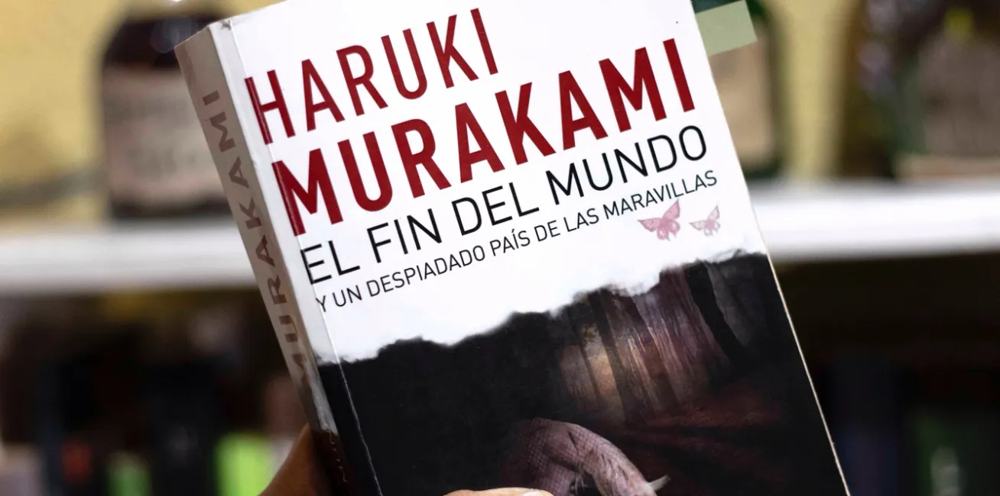

El Fin del Mundo y un Despiadado País de las Maravillas
Considerada una obra que se mueve entre la ciencia ficción, el surrealismo y la ficción especulativa, es citada a menudo como una de las mejores novelas de Haruki Murakami. Publicada en 1985, aún es posible leerla y encontrar su temática vigente. Luisa Guadarrama, lectora habitual de Argonáutica comenta acerca del libro.

Hay historias que funcionan como espejos dobles, donde una se mira desde afuera y al mismo tiempo desde adentro. Esta novela de Murakami, es una de ellas.
La historia se desliza entre dos mundos: un Tokio futurista, caótico y tecnológico, y otro silencioso, amurallado, lleno de símbolos y misterio. Dos relatos entrelazados que, al principio parecen no tener conexión. Conforme la historia avanza, descubrimos que ambos mundos son dimensiones de la misma consciencia, dos formas de habitar la existencia.
La mente que produce y obedece, y el mundo interior que recuerda, sueña y en ocasiones duele. El “País de las Maravillas”, es entonces reflejo del ritmo externo que nos exige pensar, procesar, resolver, encajar. El “Fin del Mundo”, en cambio, es un espacio interno donde nos gustaría refugiarnos a veces: aquietado, sin heridas ni ruido, sin reloj.
El libro orilla a reflexionar acerca de la dualidad. La verdadera integridad no está en elegir uno de los mundos, sino en aceptar que ambos conviven dentro de nosotros. Somos la mente que resuelve y la sombra que late, el ruido y la quietud, la ciudad que exige y la ciudad que sueña.
Murakami no ofrece respuestas claras (nunca lo hace), más bien parece invitarnos a contemplar el dilema humano y existencial que todos atravesamos: la tensión entre la vida de afuera y la vida hacia adentro, entre el deber y el ser.
Un libro maravilloso para quienes disfrutan lecturas largas, preguntas existenciales, lo onírico y las historias que asombran la mente pero también atraviesan nuestro mundo emocional.
De “El fin del mundo y un despiadado país de las maravillas”. Haruki Murakami
La Navegante Literaria:

Luisa Guadarrama, psicóloga clínica e instructora de yoga terapéutico. Siempre acompañada de un libro, viajera, exploradora de sitios literarios, incorpora la literatura como una vía de reflexión y sensibilidad, integrando sus lecturas en la comprensión del mundo interno y de los procesos psicológicos. Es amante de los perros y habitual visitante de cafeterías por las mañanas.
Café La Fauna es un lugar para compartir un buen momento tomando café, comiendo o buscando libros en Argonáutica, su sala de lectura. Visítala en Morrow 8, Cuernavaca Centro.